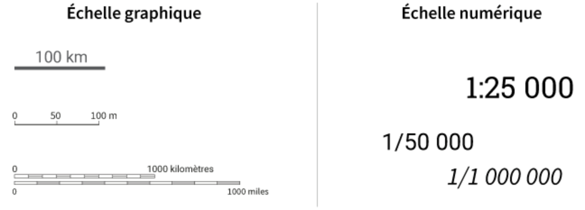
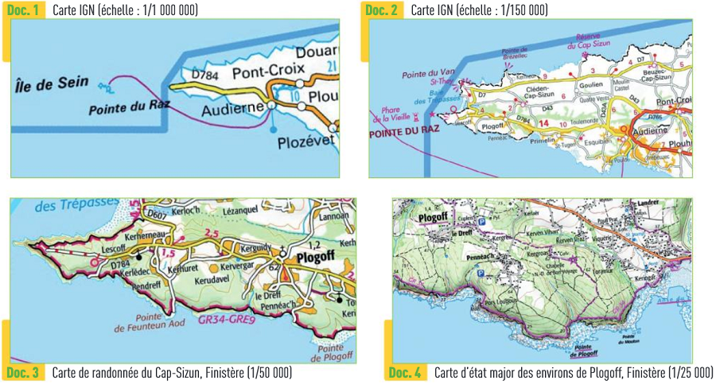

Compléments d'explications : L’échelle graphique est accessible visuellement avec des traits de proportions (la longueur du trait équivaut à la distance notée). L’échelle numérique est une proportion entre une distance sur la carte et son équivalent en réel.  Ci dessous quatre exemples, de cartes représentant un même lieu avec différentes échelles. - Pour l'échelle au 1/1 000 000, 1cm sur la carte représente 10km sur le terrain. - Pour l'échelle au 1/150 000, 1cm sur la carte représente 1,5km sur le terrain ; - Pour l'échelle au 1/50 000, 1cm sur la carte représente 500m sur le terrain. - Pour l'échelle au 1/25 000, 1cm sur la carte représente 250m sur le terrain ; 